Kevin Fan 21005203
The distance from a point (x0, y0) to a point (x, y) on the curve y = f(x) is sqrt((x - x0)^2 + (f(x) - y0)^2). A square root is expensive to compute and it is monotonically increasing, so whichever x minimizes the distance also minimizes the squared distance. Both methods below work on the squared distance instead, which also keeps the derivatives simple:
D(x) = (x - x0)^2 + (f(x) - y0)^2
D'(x) = 2(x - x0) + 2(f(x) - y0) f'(x)
D''(x) = 2 + 2 f'(x)^2 + 2(f(x) - y0) f''(x)
Setting D'(x) = 0 rearranges to (x - x0) + (f(x) - y0) f'(x) = 0, which is a dot product of the vector from the point to the curve, (x - x0, f(x) - y0), with the tangent direction (1, f'(x)). So the condition says the shortest line from the point to the curve has to be perpendicular to the tangent of the curve at the point where it lands. That is the geometric meaning of the minimum.
For this assignment f(x) = x^2 + 5, so f'(x) = 2x and f''(x) = 2. Every given point has y0 = 0, which gives
D(x) = (x - x0)^2 + (x^2 + 5)^2
D'(x) = 4x^3 + 22x - 2x0
D''(x) = 12x^2 + 22
D''(x) = 12x^2 + 22 is positive for every x, so D is convex and has exactly one stationary point, which must be the minimum. This matters for both algorithms: it means Newton-Raphson cannot converge to a local maximum or to the wrong minimum, and any bracket that contains the minimum is valid for golden section. The handwritten pages below have the analytical solution and both numerical methods worked out for all five points.
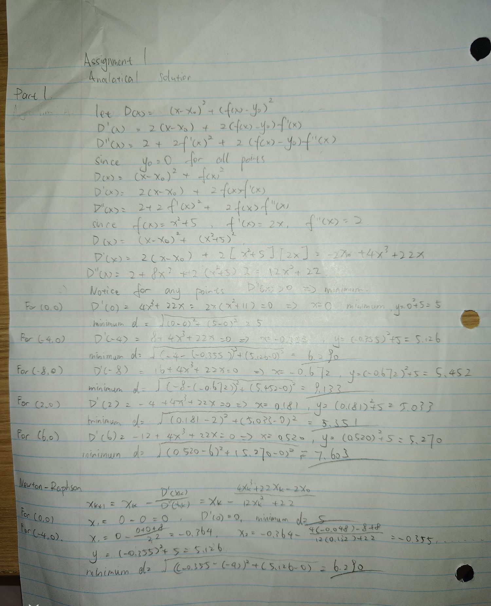
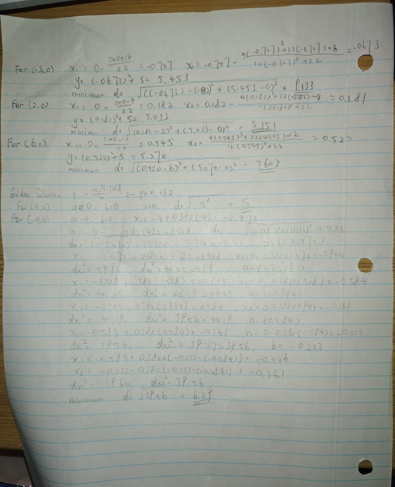
Part 1 by hand: analytical solution, Newton-Raphson and golden section
Newton-Raphson finds a root of D' by replacing D' with its tangent line at the current guess and jumping to where that line crosses zero:
x(k+1) = x(k) - D'(x(k)) / D''(x(k))
For this parabola that works out to x(k+1) = x(k) - (4x(k)^3 + 22x(k) - 2x0) / (12x(k)^2 + 22). Every run starts at x = 0 and stops when the step size drops under 1e-7. The table below is the point (-4, 0). The step shrinks very quickly, roughly squaring the error each time, so the number of correct digits about doubles per iteration. That is why 4 iterations are enough to hit the tolerance.
| k | x(k) | D'(x(k)) | D''(x(k)) |
|---|---|---|---|
| 0 | 0.000000000 | 8.000000000 | 22.000000 |
| 1 | -0.363636364 | -0.192336589 | 23.586777 |
| 2 | -0.355481939 | -0.000287990 | 23.516409 |
| 3 | -0.355469693 | -0.000000001 | 23.516304 |
| 4 | -0.355469693 | 0.000000000 | 23.516304 |
Newton-Raphson for the point (-4, 0), starting at x = 0.
Starting at x = 0 is a safe choice here. D'(0) = -2x0, so the first step is always x1 = x0/11, and since the 4x^3 term has the same sign as x the root is closer to zero than x0/11 is. So the first step lands just past the root and every step after that approaches it from one side without overshooting. You can see this in the table: after x1 the values only move in one direction.
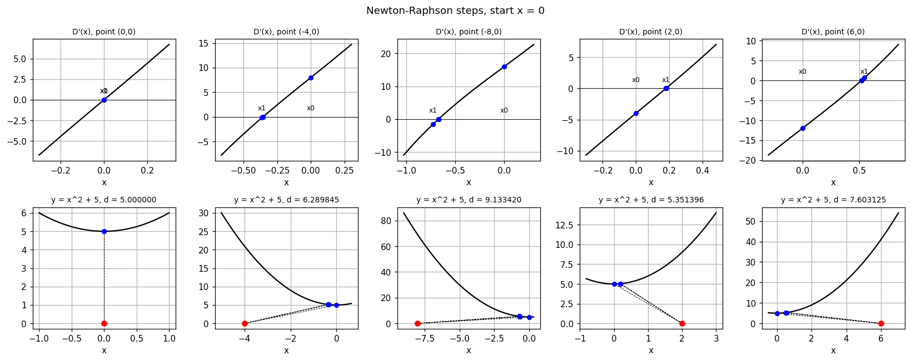
Intermediate steps for all five points. The top row plots D'(x) with the iterates marked on it, so the method is looking for where the black curve crosses zero. The bottom row shows the same iterates as points on the parabola, with a line drawn from the given point to each one.
Golden section search works on D(x) directly and never uses a derivative, so it still works when f' and f'' are hard to write down. It keeps a bracket [a, b] known to contain the minimum and two interior points
x1 = a + (2 - phi)(b - a) and x2 = b - (2 - phi)(b - a), where phi = (1 + sqrt(5))/2 = 1.618 and 2 - phi = 0.381966
If D(x1) < D(x2) the minimum cannot be to the right of x2, so the new bracket is [a, x2]. Otherwise it is [x1, b]. The reason for the golden ratio spacing is that it makes one of the two old interior points land exactly where a new interior point is needed, so each iteration only costs one new evaluation of D instead of two. The bracket shrinks by a factor 1/phi = 0.618 every step, which is a fixed rate that does not depend on the function.
The bracket has to contain the minimum for the method to be valid. Here D'(0) = -2x0 and D'(x0) = 4x0^3 + 20x0 have opposite signs, so the minimum is always between 0 and x0, and that is the bracket the code uses. For (0, 0) the minimum is at x = 0 itself so it uses [-1, 1].
| k | a | b | x1 | x2 | b - a |
|---|---|---|---|---|---|
| 0 | -4.000000 | 0.000000 | -2.472136 | -1.527864 | 4.000000 |
| 1 | -2.472136 | 0.000000 | -1.527864 | -0.944272 | 2.472136 |
| 2 | -1.527864 | 0.000000 | -0.944272 | -0.583592 | 1.527864 |
| 3 | -0.944272 | 0.000000 | -0.583592 | -0.360680 | 0.944272 |
| 4 | -0.583592 | 0.000000 | -0.360680 | -0.222912 | 0.583592 |
| 5 | -0.583592 | -0.222912 | -0.445825 | -0.360680 | 0.360680 |
Golden section for the point (-4, 0) on the bracket [-4, 0].
The point reuse shows up between k = 0 and k = 1: the old x1 of -1.527864 becomes the new x2, so only one new value of D has to be computed. The number of iterations needed is fixed in advance by the starting width and the tolerance, since the bracket shrinks by the same factor each time: N = ln(tol / (b - a)) / ln(0.618), which gives 37 for this bracket.
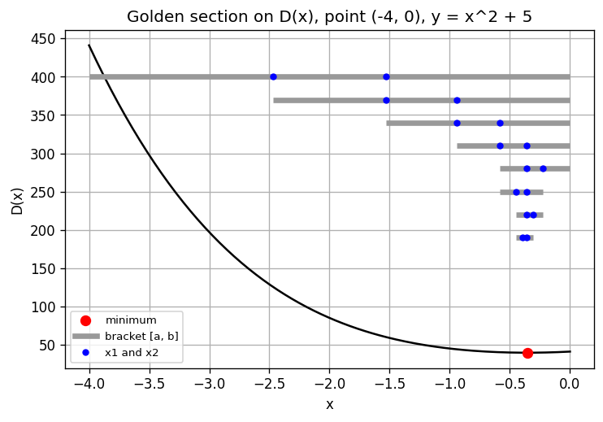
Intermediate steps. The bars are the bracket [a, b] at each iteration and the dots are the two interior points x1 and x2. The bracket closes in on the minimum from both sides.
| Point | x Newton | d Newton | steps | x golden | d golden | steps |
|---|---|---|---|---|---|---|
| (0, 0) | 0.0000000 | 5.0000000 | 1 | 0.0000000 | 5.0000000 | 35 |
| (-4, 0) | -0.3554697 | 6.2898454 | 4 | -0.3554697 | 6.2898454 | 37 |
| (-8, 0) | -0.6720781 | 9.1334195 | 5 | -0.6720781 | 9.1334195 | 38 |
| (2, 0) | 0.1807446 | 5.3513964 | 4 | 0.1807446 | 5.3513964 | 35 |
| (6, 0) | 0.5199037 | 7.6031254 | 4 | 0.5199037 | 7.6031254 | 38 |
Both numerical methods agree with each other and with the analytical answers from the handwritten pages to 7 decimal places, which is the check that the routine works. The two methods get there very differently though. Newton needs 4 or 5 iterations because its error is squared each step, but it needs both f' and f'' and a starting guess that is close enough. Golden section needs 35 to 38 iterations no matter which point is used, because its rate is fixed at 0.618 per step, but it only ever evaluates f and it cannot fail as long as the bracket really does contain a single minimum. Newton is the better choice when the derivatives are easy, golden section when they are not.
One thing worth noticing in the results: moving the given point further out along the x axis barely moves the closest point. Going from (2, 0) to (6, 0) triples x0 but x* only moves from 0.18 to 0.52. That is because the parabola sits 5 units above the axis and gets steep quickly, so the nearest point stays close to the vertex.
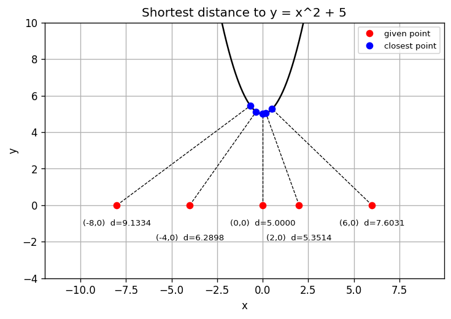
The five shortest distances. Each dashed line meets the curve at a right angle to the tangent there, which is the D'(x) = 0 condition.
Nothing in either function is specific to y = x^2 + 5. They take f, f' and
f'' as arguments, so any curve works. parabola(a, b, c) builds the
three functions for y = a x^2 + b x + c, and the table below runs four other
combinations of parabola and point, including a downward opening one and points
on both sides of the curve.
| Curve | Point | x Newton | d Newton | d golden |
|---|---|---|---|---|
| y = 0.5x^2 - 2x + 1 | (3, -2) | 2.4734658 | 1.2304354 | 1.2304354 |
| y = 0.5x^2 - 2x + 1 | (-1, 4) | -1.1474302 | 0.1546926 | 0.1546926 |
| y = -2x^2 + 4x | (4, 1) | 1.8918845 | 2.1893681 | 2.1893681 |
| y = x^2 - x + 2 | (2, 0) | 0.8189171 | 2.1963105 | 2.1963105 |
The two methods agree on all four. For these the golden section bracket was just set to [-10, 10] rather than being worked out per case, which is fine because each of these has a single minimum inside that range.
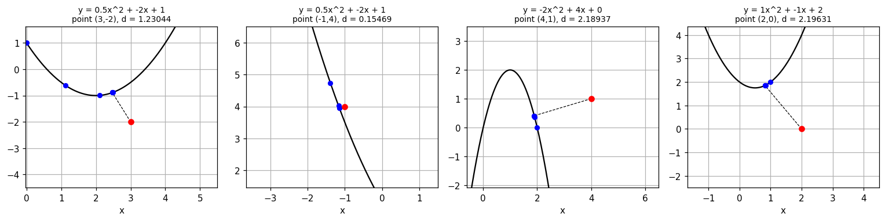
Open circles are the Newton iterates, the dashed line is the shortest distance.
Neither method assumes f is a polynomial anywhere. Newton only needs f, f' and f'' to be computable at a point, and golden section only needs f. So the only change is passing different functions in. The four cases below cover an exponential, a logarithm, one with the variable in the denominator, and a radical.
| Curve | Point | x Newton | d Newton | d golden |
|---|---|---|---|---|
| y = e^x | (2, 1) | 0.582871 | 1.6230250 | 1.6230250 |
| y = ln(x) | (0, 2) | 1.314097 | 2.1699914 | 2.1699914 |
| y = 1/x | (3, 1) | 2.923000 | 0.6623765 | 0.6623765 |
| y = sqrt(x) | (4, 0) | 3.500000 | 1.9364917 | 1.9364917 |
The square root case can be checked by hand, which is a useful test that the code is right. With f(x) = sqrt(x) and the point (4, 0), D(x) = (x - 4)^2 + x, so D'(x) = 2x - 7 and x* = 3.5, giving d = sqrt(0.25 + 3.5) = 1.9364917. That matches both methods exactly. Newton gets it in only 2 steps here because D is a quadratic in this case, so the tangent line of D' is not an approximation, it is exact.
One practical note: for ln(x) and 1/x the function is undefined at or below x = 0, so the starting guess and the bracket both have to be kept on the positive side. Golden section needed a bracket like [0.05, 5] rather than one starting at 0.
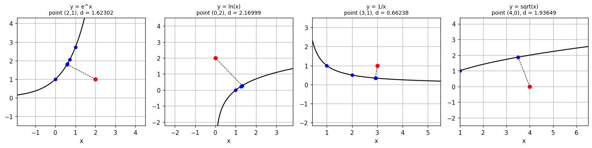
y = x^2 + 5
point x newton d newton it x golden d golden it
(0, 0) 0.0000000 5.0000000 1 0.0000000 5.0000000 35
(-4, 0) -0.3554697 6.2898454 4 -0.3554697 6.2898454 37
(-8, 0) -0.6720781 9.1334195 5 -0.6720781 9.1334195 38
(2, 0) 0.1807446 5.3513964 4 0.1807446 5.3513964 35
(6, 0) 0.5199037 7.6031254 4 0.5199037 7.6031254 38
Newton iterations for (-4, 0), starting at x = 0
k x_k D1 D2
0 0.000000000 8.000000000 22.000000
1 -0.363636364 -0.192336589 23.586777
2 -0.355481939 -0.000287990 23.516409
3 -0.355469693 -0.000000001 23.516304
4 -0.355469693 0.000000000 23.516304
Golden section brackets for (-4, 0), first 6
k a b x1 x2 b-a
0 -4.000000 0.000000 -2.472136 -1.527864 4.000000
1 -2.472136 0.000000 -1.527864 -0.944272 2.472136
2 -1.527864 0.000000 -0.944272 -0.583592 1.527864
3 -0.944272 0.000000 -0.583592 -0.360680 0.944272
4 -0.583592 0.000000 -0.360680 -0.222912 0.583592
5 -0.583592 -0.222912 -0.445825 -0.360680 0.360680
Other parabolas and points
curve point x newton d newton d golden
y = 0.5x^2 + -2x + 1 (3, -2) 2.4734658 1.2304354 1.2304354
y = 0.5x^2 + -2x + 1 (-1, 4) -1.1474302 0.1546926 0.1546926
y = -2x^2 + 4x + 0 (4, 1) 1.8918845 2.1893681 2.1893681
y = 1x^2 + -1x + 2 (2, 0) 0.8189171 2.1963105 2.1963105
Non-polynomial functions
curve point x newton d newton d golden
y = e^x (2, 1) 0.582871 1.6230250 1.6230250
y = ln(x) (0, 2) 1.314097 2.1699914 2.1699914
y = 1/x (3, 1) 2.923000 0.6623765 0.6623765
y = sqrt(x) (4, 0) 3.500000 1.9364917 1.9364917
done, plots saved in ../media
"""
SYDE 572 Assignment 1 - Part 1
Shortest distance from a point (x0, y0) to a curve y = f(x).
Square root is increasing, so minimizing the distance is the same as
minimizing the squared distance:
D(x) = (x - x0)^2 + (f(x) - y0)^2
D'(x) = 2(x - x0) + 2(f(x) - y0)*f'(x)
D''(x)= 2 + 2*f'(x)^2 + 2*(f(x) - y0)*f''(x)
"""
import math
import matplotlib
matplotlib.use("Agg")
import matplotlib.pyplot as plt
import numpy as np
def dist_sq(x, x0, y0, f):
return (x - x0) ** 2 + (f(x) - y0) ** 2
def d1(x, x0, y0, f, df):
return 2 * (x - x0) + 2 * (f(x) - y0) * df(x)
def d2(x, x0, y0, f, df, ddf):
return 2 + 2 * df(x) ** 2 + 2 * (f(x) - y0) * ddf(x)
# ----- Algorithm A: Newton-Raphson on D'(x) = 0 -----
def newton(x0, y0, f, df, ddf, guess=0.0, tol=1e-7, max_iter=100):
x = guess
xs = [x]
for i in range(max_iter):
g = d1(x, x0, y0, f, df)
h = d2(x, x0, y0, f, df, ddf)
if h == 0:
print("D'' is zero, stopping")
break
new_x = x - g / h
xs.append(new_x)
if abs(new_x - x) < tol:
x = new_x
break
x = new_x
return math.sqrt(dist_sq(x, x0, y0, f)), x, xs
# --------- Algorithm B: golden section search on D(x) ---------------
PHI = (1 + math.sqrt(5)) / 2
R = 2 - PHI # 0.381966
def golden(x0, y0, f, a, b, tol=1e-7):
x1 = a + R * (b - a)
x2 = b - R * (b - a)
f1 = dist_sq(x1, x0, y0, f)
f2 = dist_sq(x2, x0, y0, f)
brackets = [(a, b, x1, x2)]
while abs(b - a) > tol:
if f1 < f2:
# minimum must be left of x2
b = x2
x2, f2 = x1, f1
x1 = a + R * (b - a)
f1 = dist_sq(x1, x0, y0, f)
else:
a = x1
x1, f1 = x2, f2
x2 = b - R * (b - a)
f2 = dist_sq(x2, x0, y0, f)
brackets.append((a, b, x1, x2))
best = (a + b) / 2
return math.sqrt(dist_sq(best, x0, y0, f)), best, brackets
def parabola(a, b, c):
"""Returns f, f', f'' for y = a x^2 + b x + c."""
f = lambda x: a * x ** 2 + b * x + c
df = lambda x: 2 * a * x + b
ddf = lambda x: 2 * a
return f, df, ddf
# =====================================================
if __name__ == "__main__":
f, df, ddf = parabola(1, 0, 5)
points = [(0, 0), (-4, 0), (-8, 0), (2, 0), (6, 0)]
# D'(0) = -2*x0 and D'(x0) has the same sign as x0, so the minimum is
# always between 0 and x0. That is the bracket for golden section.
def bracket(x0):
if x0 == 0:
return -1.0, 1.0
return min(x0, 0.0), max(x0, 0.0)
print("y = x^2 + 5")
print(f"{'point':>10} {'x newton':>12} {'d newton':>12} {'it':>4} "
f"{'x golden':>12} {'d golden':>12} {'it':>4}")
results = []
for (x0, y0) in points:
dn, xn, xs = newton(x0, y0, f, df, ddf, guess=0.0)
a, b = bracket(x0)
dg, xg, br = golden(x0, y0, f, a, b)
results.append(dict(pt=(x0, y0), xn=xn, dn=dn, xs=xs,
xg=xg, dg=dg, br=br, bracket=(a, b)))
print(f"{str((x0,y0)):>10} {xn:12.7f} {dn:12.7f} {len(xs)-1:4d} "
f"{xg:12.7f} {dg:12.7f} {len(br)-1:4d}")
print("\nNewton iterations for (-4, 0), starting at x = 0")
print(f"{'k':>3} {'x_k':>14} {'D1':>14} {'D2':>12}")
for k, x in enumerate(results[1]["xs"]):
print(f"{k:3d} {x:14.9f} {d1(x,-4,0,f,df):14.9f} {d2(x,-4,0,f,df,ddf):12.6f}")
print("\nGolden section brackets for (-4, 0), first 6")
print(f"{'k':>3} {'a':>11} {'b':>11} {'x1':>11} {'x2':>11} {'b-a':>11}")
for k, (a, b, x1, x2) in enumerate(results[1]["br"][:6]):
print(f"{k:3d} {a:11.6f} {b:11.6f} {x1:11.6f} {x2:11.6f} {b-a:11.6f}")
# plot 1: the five shortest distances
plt.figure(figsize=(7, 4.5))
xx = np.linspace(-2.5, 2.5, 200)
plt.plot(xx, f(xx), 'k-')
for i, r in enumerate(results):
x0, y0 = r["pt"]
plt.plot([x0, r["xn"]], [y0, f(r["xn"])], 'k--', lw=0.8)
plt.plot(x0, y0, 'ro')
plt.plot(r["xn"], f(r["xn"]), 'bo')
# stagger the labels or (0,0) and (2,0) sit on top of each other
dy = -20 if i % 2 == 0 else -34
plt.annotate(f"({x0},{y0}) d={r['dn']:.4f}", (x0, y0),
textcoords="offset points", xytext=(0, dy), ha='center',
fontsize=8)
plt.plot([], [], 'ro', label='given point')
plt.plot([], [], 'bo', label='closest point')
plt.xlabel('x'); plt.ylabel('y')
plt.title('Shortest distance to y = x^2 + 5')
plt.legend(fontsize=8); plt.grid(True)
plt.axis('equal'); plt.ylim(-4, 10)
plt.savefig('../media/p1_overview.png', dpi=120, bbox_inches='tight')
plt.close()
# ------- plot 2: Newton steps -------
fig, axes = plt.subplots(2, 5, figsize=(15, 6))
for j, r in enumerate(results):
x0, y0 = r["pt"]
xs = r["xs"]
# top row: D'(x) with the iterates on it
ax = axes[0][j]
lo = min(min(xs), r["xn"]) - 0.3
hi = max(max(xs), r["xn"]) + 0.3
gx = np.linspace(lo, hi, 200)
ax.plot(gx, [d1(t, x0, y0, f, df) for t in gx], 'k-')
ax.axhline(0, color='k', lw=0.6)
ax.plot(xs, [d1(t, x0, y0, f, df) for t in xs], 'bo', ms=5)
for k in range(min(2, len(xs))):
ax.annotate(f"x{k}", (xs[k], 0), textcoords="offset points",
xytext=(0, 8), ha='center', fontsize=8)
ax.set_title(f"D'(x), point ({x0},{y0})", fontsize=9)
ax.set_xlabel('x'); ax.grid(True)
# bottom row: the same iterates on the curve
ax = axes[1][j]
gx = np.linspace(min(x0, r["xn"]) - 1, max(x0, r["xn"]) + 1, 200)
ax.plot(gx, f(gx), 'k-')
for x in xs:
ax.plot([x0, x], [y0, f(x)], 'k--', lw=0.6)
ax.plot(xs, f(np.array(xs)), 'bo', ms=5)
ax.plot(x0, y0, 'ro', ms=6)
ax.set_title(f"y = x^2 + 5, d = {r['dn']:.6f}", fontsize=9)
ax.set_xlabel('x'); ax.grid(True)
fig.suptitle('Newton-Raphson steps, start x = 0')
plt.tight_layout()
plt.savefig('../media/p1_newton.png', dpi=110, bbox_inches='tight')
plt.close()
# plot 3: golden section brackets
plt.figure(figsize=(7, 4.5))
r = results[1] # point (-4, 0)
a0, b0 = r["bracket"]
gx = np.linspace(a0, b0, 200)
plt.plot(gx, [dist_sq(t, -4, 0, f) for t in gx], 'k-')
plt.plot(r["xg"], r["dg"] ** 2, 'ro', ms=7, label='minimum')
for k, (a, b, x1, x2) in enumerate(r["br"][:8]):
plt.plot([a, b], [400 - 30 * k, 400 - 30 * k], color='0.6', lw=4,
solid_capstyle='butt')
plt.plot([x1, x2], [400 - 30 * k, 400 - 30 * k], 'bo', ms=4)
plt.plot([], [], color='0.6', lw=4, label='bracket [a, b]')
plt.plot([], [], 'bo', ms=4, label='x1 and x2')
plt.xlabel('x'); plt.ylabel('D(x)')
plt.title('Golden section on D(x), point (-4, 0), y = x^2 + 5')
plt.legend(fontsize=8); plt.grid(True)
plt.savefig('../media/p1_golden.png', dpi=120, bbox_inches='tight')
plt.close()
# ---------- other parabolas ----------
print("\nOther parabolas and points")
others = [(0.5, -2, 1, 3, -2, 0.0),
(0.5, -2, 1, -1, 4, 0.0),
(-2, 4, 0, 4, 1, 2.0),
(1, -1, 2, 2, 0, 1.0)]
print(f"{'curve':>22} {'point':>10} {'x newton':>11} {'d newton':>11} {'d golden':>11}")
fig, axes = plt.subplots(1, 4, figsize=(14, 3.6))
for ax, (a, b, c, px, py, guess) in zip(axes, others):
ff, dff, ddff = parabola(a, b, c)
dn, xn, xs = newton(px, py, ff, dff, ddff, guess=guess)
dg, xg, br = golden(px, py, ff, -10, 10)
name = f"y = {a}x^2 + {b}x + {c}"
print(f"{name:>22} {str((px,py)):>10} {xn:11.7f} {dn:11.7f} {dg:11.7f}")
gx = np.linspace(min(px, xn) - 3, max(px, xn) + 3, 300)
ax.plot(gx, ff(gx), 'k-')
ax.plot([px, xn], [py, ff(xn)], 'k--', lw=0.8)
ax.plot(xs, ff(np.array(xs)), 'bo', ms=5)
ax.plot(px, py, 'ro', ms=6)
ax.set_title(f"{name}\npoint ({px},{py}), d = {dn:.5f}", fontsize=9)
ax.set_xlabel('x'); ax.grid(True)
# fix the window, or an early iterate that lands far away stretches it
ax.set_xlim(min(px, xn) - 2.5, max(px, xn) + 2.5)
ax.set_ylim(min(py, ff(xn)) - 2.5, max(py, ff(xn)) + 2.5)
plt.tight_layout()
plt.savefig('../media/p1_other.png', dpi=110, bbox_inches='tight')
plt.close()
# non-polynomial functions. Only f, f' and f'' change, the two
# methods stay exactly the same.
print("\nNon-polynomial functions")
cases = [
("y = e^x", lambda x: np.exp(x), lambda x: np.exp(x), lambda x: np.exp(x),
(2, 1), 0.0, (-3, 3)),
("y = ln(x)", lambda x: np.log(x), lambda x: 1 / x, lambda x: -1 / x ** 2,
(0, 2), 1.0, (0.05, 5)),
("y = 1/x", lambda x: 1 / x, lambda x: -1 / x ** 2, lambda x: 2 / x ** 3,
(3, 1), 1.0, (0.2, 6)),
("y = sqrt(x)", lambda x: np.sqrt(x), lambda x: 0.5 / np.sqrt(x),
lambda x: -0.25 * x ** -1.5, (4, 0), 1.0, (0.01, 8)),
]
print(f"{'curve':>20} {'point':>9} {'x newton':>11} {'d newton':>11} "
f"{'d golden':>11}")
fig, axes = plt.subplots(1, 4, figsize=(14, 3.6))
for ax, (name, ff, dff, ddff, (px, py), guess, (ga, gb)) in zip(axes, cases):
dn, xn, xs = newton(px, py, ff, dff, ddff, guess=guess)
dg, xg, br = golden(px, py, ff, ga, gb)
print(f"{name:>20} {str((px,py)):>9} {xn:11.6f} {dn:11.7f} {dg:11.7f}")
gx = np.linspace(ga, gb, 300)
ax.plot(gx, ff(gx), 'k-')
ax.plot([px, xn], [py, ff(xn)], 'k--', lw=0.8)
ax.plot(xs, [ff(x) for x in xs], 'bo', ms=5)
ax.plot(px, py, 'ro', ms=6)
ax.set_title(f"{name}\npoint ({px},{py}), d = {dn:.5f}", fontsize=9)
ax.set_xlabel('x'); ax.grid(True)
ax.set_xlim(min(px, xn) - 2.5, max(px, xn) + 2.5)
ax.set_ylim(min(py, ff(xn)) - 2.5, max(py, ff(xn)) + 2.5)
plt.tight_layout()
plt.savefig('../media/p1_nonpoly.png', dpi=110, bbox_inches='tight')
plt.close()
print("\ndone, plots saved in ../media")
Data: (0, 0.5), (2, 3.5), (1, 1.5), (3, 7.5).
For a model yhat(x) with parameters theta, the mean squared error over the n = 4 data points is
MSE(theta) = (1/n) * sum of (yhat(x_i) - y_i)^2
Two models are fitted:
Both models are linear in their parameters even though the parabola is not linear in x. That makes the MSE a quadratic bowl in the parameters, so it has a single minimum and no local minima to worry about. The sums that come up when the partial derivatives are expanded are n = 4, sum x = 6, sum x^2 = 14, sum x^3 = 36, sum x^4 = 98, sum y = 13, sum xy = 31 and sum x^2 y = 83.
Setting every partial derivative to zero gives one linear equation per parameter, and those are solved directly. For the line that is
14m + 6b = 31
6m + 4b = 13
and for the parabola
98a + 36b + 14c = 83
36a + 14b + 6c = 31
14a + 6b + 4c = 13
The full working is on the handwritten page below.
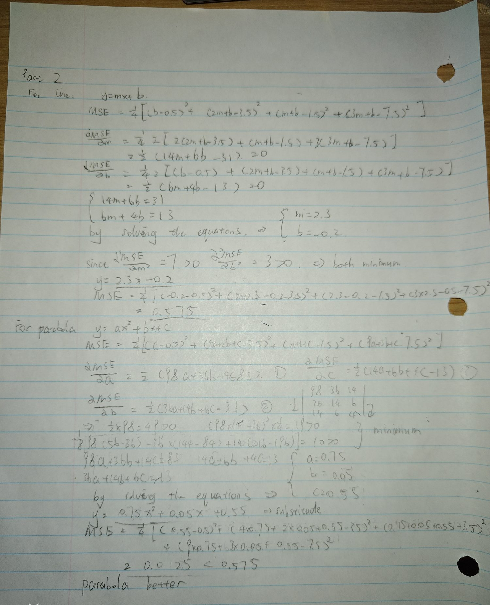
Part 2 by hand: line and parabola
The numerical method optimizes one parameter at a time: fix every parameter except one, take a Newton step in that one, then move to the next parameter and repeat. For parameter j the update is
theta_j <- theta_j - (dMSE/dtheta_j) / (d2MSE/dtheta_j^2)
Because the MSE is quadratic in each parameter on its own, this single Newton step lands exactly on the best value of that parameter for the current values of the others. There is no approximation in the inner step at all, so all of the iterating happens in the outer loop that cycles through the parameters. Substituting the sums, the two updates for the line work out to
m <- (31 - 6b) / 14
b <- (13 - 6m) / 4
and the three for the parabola to
a <- (83 - 36b - 14c) / 98
b <- (31 - 36a - 6c) / 14
c <- (13 - 14a - 6b) / 4
Starting every parameter at 0 gives the tables below. The parabola cycles a, then b, then c, and only counts as one sweep once all three have been updated.
| sweep | parameter | m | b | MSE |
|---|---|---|---|---|
| 0 | start | 0.000000 | 0.000000 | 17.750000 |
| 1 | m | 2.214286 | 0.000000 | 0.589286 |
| 1 | b | 2.214286 | -0.071429 | 0.584184 |
| 2 | m | 2.244898 | -0.071429 | 0.580904 |
| 2 | b | 2.244898 | -0.117347 | 0.578795 |
| 3 | m | 2.264577 | -0.117347 | 0.577440 |
| 3 | b | 2.264577 | -0.146866 | 0.576568 |
First updates for the line, starting from m = 0, b = 0.
| sweep | parameter | a | b | c | MSE |
|---|---|---|---|---|---|
| 0 | start | 0.000000 | 0.000000 | 0.000000 | 17.750000 |
| 1 | a | 0.846939 | 0.000000 | 0.000000 | 0.176020 |
| 1 | b | 0.846939 | 0.036443 | 0.000000 | 0.171372 |
| 1 | c | 0.846939 | 0.036443 | 0.231050 | 0.117988 |
| 2 | a | 0.800544 | 0.036443 | 0.231050 | 0.065253 |
| 2 | b | 0.800544 | 0.056722 | 0.231050 | 0.063814 |
| 2 | c | 0.800544 | 0.056722 | 0.363012 | 0.046400 |
First updates for the parabola, starting from a = b = c = 0.
The first sweep gets most of the way there, dropping the MSE from 17.75 to 0.584 for the line, but the remaining error shrinks slowly and steadily after that. The error in m goes -0.0857, -0.0551, -0.0354 and so on, which is a constant ratio rather than the doubling accuracy Newton gives on a single variable. The reason is that each update is only optimal for one parameter while the others are held wrong, so the method has to keep cycling. It takes 48 sweeps to reach a tolerance of 1e-10 for the line and 476 for the parabola. The parabola is much slower because its three columns x^2, x and 1 are strongly correlated over x in [0, 3], so changing one parameter throws the other two off by a lot and each sweep only claws back a small part of the error.
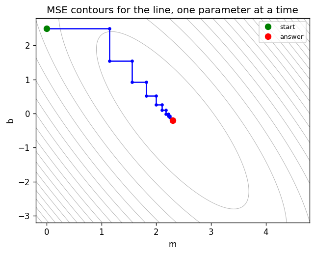
Intermediate steps drawn on the MSE surface for the line. Because only one parameter changes per update, every move is either horizontal or vertical and the path is a staircase down the valley. This plot starts at (0, 2.5) rather than (0, 0) so the steps are visible, since from (0, 0) the first step already lands almost on top of the answer. The parabola has three parameters so its surface cannot be drawn as a 2D contour, but the next plot shows its intermediate fits.
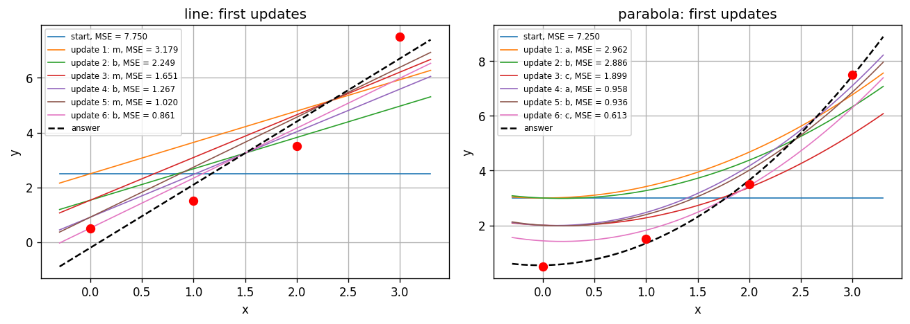
The same first six updates seen as fitted curves, with the final answer dashed.
| Model | Fitted equation | MSE |
|---|---|---|
| line | y = 2.3x - 0.2 | 0.5750000 |
| parabola | y = 0.75x^2 + 0.05x + 0.55 | 0.0125000 |
The one parameter at a time method reaches the same answers as the analytical solution, which is the check that it is working. The parabola fits far better, with an MSE 46 times smaller. That makes sense from the data: the y values 0.5, 1.5, 3.5, 7.5 grow faster and faster as x increases, which is curvature that a straight line has no way to follow. The line residuals are -0.7, 0.6, 0.9 and -0.8 going left to right, so it sits too low at both ends and too high in the middle, which is the pattern you get when a model is missing curvature. The parabola residuals are 0.05, -0.15, 0.15 and -0.05, much smaller and with no obvious pattern left.
Worth noting that with 4 data points and 3 parameters the parabola is close to interpolating the data, so a lower MSE on its own does not prove it is the better model. It only takes one more parameter to fit the 4 points exactly.
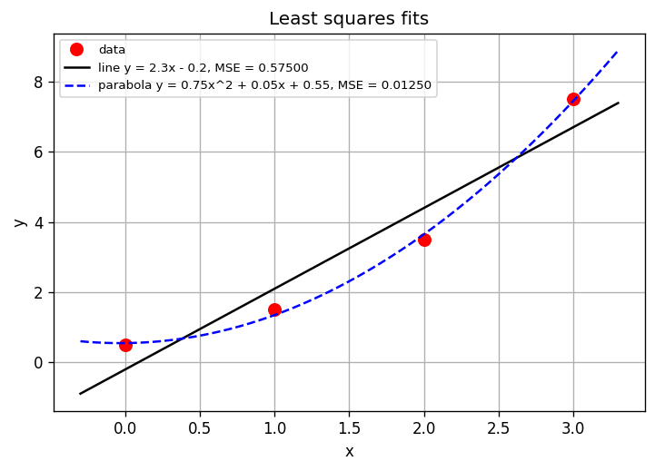
One assumption worth stating: the MSE here divides by n = 4. If it is defined as the plain sum of squared errors instead, the two values become 2.30 and 0.0510. The fitted parameters are the same either way, since dividing by a constant does not move the minimum.
data points: [(0.0, 0.5), (2.0, 3.5), (1.0, 1.5), (3.0, 7.5)]
sums: n = 4 sum x = 6.0 sum x^2 = 14.0 sum x^3 = 36.0 sum x^4 = 98.0
sum y = 13.0 sum xy = 31.0 sum x^2 y = 83.0
line
normal equations matrix:
[[14. 6.]
[ 6. 4.]]
rhs: [31. 13.]
analytic {'m': 2.3, 'b': -0.2}
one at a time {'m': 2.3, 'b': -0.2} after 48 sweeps
MSE = 0.57500000
parabola
normal equations matrix:
[[98. 36. 14.]
[36. 14. 6.]
[14. 6. 4.]]
rhs: [83. 31. 13.]
analytic {'a': 0.75, 'b': 0.05, 'c': 0.55}
one at a time {'a': 0.75, 'b': 0.05, 'c': 0.55} after 476 sweeps
MSE = 0.01250000
first updates for line
sweep param m b MSE
0 None 0.000000 0.000000 17.750000
1 m 2.214286 0.000000 0.589286
1 b 2.214286 -0.071429 0.584184
2 m 2.244898 -0.071429 0.580904
2 b 2.244898 -0.117347 0.578795
3 m 2.264577 -0.117347 0.577440
3 b 2.264577 -0.146866 0.576568
4 m 2.277228 -0.146866 0.576008
4 b 2.277228 -0.165842 0.575648
first updates for parabola
sweep param a b c MSE
0 None 0.000000 0.000000 0.000000 17.750000
1 a 0.846939 0.000000 0.000000 0.176020
1 b 0.846939 0.036443 0.000000 0.171372
1 c 0.846939 0.036443 0.231050 0.117988
2 a 0.800544 0.036443 0.231050 0.065253
2 b 0.800544 0.056722 0.231050 0.063814
2 c 0.800544 0.056722 0.363012 0.046400
3 a 0.774243 0.056722 0.363012 0.029452
3 b 0.774243 0.067798 0.363012 0.029023
done, plots saved in ../media
"""
SYDE 572 Assignment 1 - Part 2
Fit a line and a parabola to 4 points by minimizing the mean squared error.
line y = m*x + b 2 parameters
parabola y = a*x^2 + b*x + c 3 parameters
MSE(theta) = (1/n) * sum (yhat_i - y_i)^2
Solved analytically by setting the partial derivatives to zero, and
numerically with Newton-Raphson optimizing one parameter at a time.
"""
import matplotlib
matplotlib.use("Agg")
import matplotlib.pyplot as plt
import numpy as np
X = np.array([0.0, 2.0, 1.0, 3.0])
Y = np.array([0.5, 3.5, 1.5, 7.5])
NAMES = {"line": ["m", "b"], "parabola": ["a", "b", "c"]}
def design(model, x):
"""Columns of the model. Both models are linear in their parameters,
so yhat = design @ theta."""
x = np.asarray(x, dtype=float)
if model == "line":
return np.column_stack([x, np.ones_like(x)])
elif model == "parabola":
return np.column_stack([x ** 2, x, np.ones_like(x)])
else:
raise ValueError("unknown model " + model)
def mse(theta, model, x=X, y=Y):
r = design(model, x) @ theta - y
return np.mean(r ** 2)
def grad(theta, model, x=X, y=Y):
# dMSE/dtheta = (2/n) * P^T (P theta - y)
P = design(model, x)
return 2 / len(y) * P.T @ (P @ theta - y)
def second(model, x=X):
# second derivatives, constant because the MSE is quadratic
P = design(model, x)
return 2 / len(x) * P.T @ P
def fit_analytic(model, x=X, y=Y):
P = design(model, x)
A = P.T @ P
rhs = P.T @ y
return np.linalg.solve(A, rhs), A, rhs
def fit_one_at_a_time(model, theta0=None, x=X, y=Y, tol=1e-10, max_sweeps=20000):
"""Newton-Raphson on one parameter at a time. For parameter j:
theta_j <- theta_j - (dMSE/dtheta_j) / (d2MSE/dtheta_j^2)
The MSE is quadratic in each parameter on its own, so this one step lands
on the best theta_j for the current values of the others.
"""
p = len(NAMES[model])
theta = np.zeros(p) if theta0 is None else np.array(theta0, dtype=float)
H = second(model, x)
history = [(0, None, theta.copy(), mse(theta, model, x, y))]
for sweep in range(1, max_sweeps + 1):
old = theta.copy()
for j in range(p):
g = grad(theta, model, x, y)
theta[j] = theta[j] - g[j] / H[j, j]
history.append((sweep, NAMES[model][j], theta.copy(),
mse(theta, model, x, y)))
if np.max(np.abs(theta - old)) < tol:
break
return theta, history
def curve(model, theta, x):
return design(model, x) @ theta
# ================================================
if __name__ == "__main__":
print("data points:", [(float(a), float(b)) for a, b in zip(X, Y)])
print("sums: n =", len(X), " sum x =", X.sum(), " sum x^2 =", (X**2).sum(),
" sum x^3 =", (X**3).sum(), " sum x^4 =", (X**4).sum())
print(" sum y =", Y.sum(), " sum xy =", (X*Y).sum(),
" sum x^2 y =", (X**2*Y).sum())
fits = {}
for model in ["line", "parabola"]:
th, A, rhs = fit_analytic(model)
th1, hist1 = fit_one_at_a_time(model)
fits[model] = dict(theta=th, hist=hist1, sweeps=hist1[-1][0],
mse=mse(th, model))
print("\n" + model)
print(" normal equations matrix:\n", A, "\n rhs:", rhs)
print(" analytic ",
dict(zip(NAMES[model], [round(float(v), 6) for v in th])))
print(" one at a time ",
dict(zip(NAMES[model], [round(float(v), 6) for v in th1])),
f"after {hist1[-1][0]} sweeps")
print(f" MSE = {mse(th, model):.8f}")
# first few updates, to compare with the hand calculation
for model in ["line", "parabola"]:
names = NAMES[model]
print("\nfirst updates for", model)
head = f"{'sweep':>6} {'param':>6}" + "".join(f"{n:>11}" for n in names)
print(head + f"{'MSE':>11}")
for (sw, par, th, m) in fits[model]["hist"][:9]:
row = f"{sw:6d} {str(par):>6}" + "".join(f"{v:11.6f}" for v in th)
print(row + f"{m:11.6f}")
# plot 1: the fits
gx = np.linspace(-0.3, 3.3, 200)
plt.figure(figsize=(7, 4.5))
plt.plot(X, Y, 'ro', ms=8, label='data')
plt.plot(gx, curve("line", fits["line"]["theta"], gx), 'k-',
label=f"line y = 2.3x - 0.2, MSE = {fits['line']['mse']:.5f}")
plt.plot(gx, curve("parabola", fits["parabola"]["theta"], gx), 'b--',
label=f"parabola y = 0.75x^2 + 0.05x + 0.55, "
f"MSE = {fits['parabola']['mse']:.5f}")
plt.xlabel('x'); plt.ylabel('y')
plt.title('Least squares fits')
plt.legend(fontsize=8); plt.grid(True)
plt.savefig('../media/p2_fits.png', dpi=120, bbox_inches='tight')
plt.close()
# ------ plot 2: path on the MSE surface, line only ------
# the parabola has 3 parameters so it cannot be drawn as a 2D contour.
# start away from the answer so the staircase is visible.
start = (0.0, 2.5)
th = fits["line"]["theta"]
u = np.linspace(th[0] - 2.5, th[0] + 2.5, 120)
v = np.linspace(th[1] - 3.0, th[1] + 3.0, 120)
U, V = np.meshgrid(u, v)
Z = np.zeros_like(U)
for i in range(U.shape[0]):
for j in range(U.shape[1]):
Z[i, j] = mse(np.array([U[i, j], V[i, j]]), "line")
plt.figure(figsize=(6, 4.5))
plt.contour(U, V, Z, levels=20, colors='0.7', linewidths=0.6)
_, hist = fit_one_at_a_time("line", theta0=start, max_sweeps=8)
path = np.array([h[2] for h in hist])
plt.plot(path[:, 0], path[:, 1], 'b.-')
plt.plot(start[0], start[1], 'go', ms=7, label='start')
plt.plot(th[0], th[1], 'ro', ms=7, label='answer')
plt.xlabel('m'); plt.ylabel('b')
plt.title('MSE contours for the line, one parameter at a time')
plt.legend(fontsize=8)
plt.savefig('../media/p2_contours.png', dpi=120, bbox_inches='tight')
plt.close()
# ---------- plot 3: intermediate fits ----------
starts = {"line": (0.0, 2.5), "parabola": (0.0, 0.0, 3.0)}
plt.figure(figsize=(11, 4))
for k, model in enumerate(["line", "parabola"]):
plt.subplot(1, 2, k + 1)
_, hist = fit_one_at_a_time(model, theta0=starts[model], max_sweeps=4)
for i, (sw, par, th, m) in enumerate(hist[:7]):
lab = 'start' if par is None else f'update {i}: {par}'
plt.plot(gx, curve(model, th, gx), lw=1, label=f'{lab}, MSE = {m:.3f}')
plt.plot(gx, curve(model, fits[model]["theta"], gx), 'k--', label='answer')
plt.plot(X, Y, 'ro', ms=7)
plt.xlabel('x'); plt.ylabel('y')
plt.title(f'{model}: first updates')
plt.legend(fontsize=7); plt.grid(True)
plt.tight_layout()
plt.savefig('../media/p2_steps.png', dpi=120, bbox_inches='tight')
plt.close()
print("\ndone, plots saved in ../media")
pip install numpy matplotlib cd 1/code python part1.py python part2.py
Both print the tables above and save their plots into 1/media.
To try a different point or curve, change the points list or the
cases list near the bottom of part1.py.